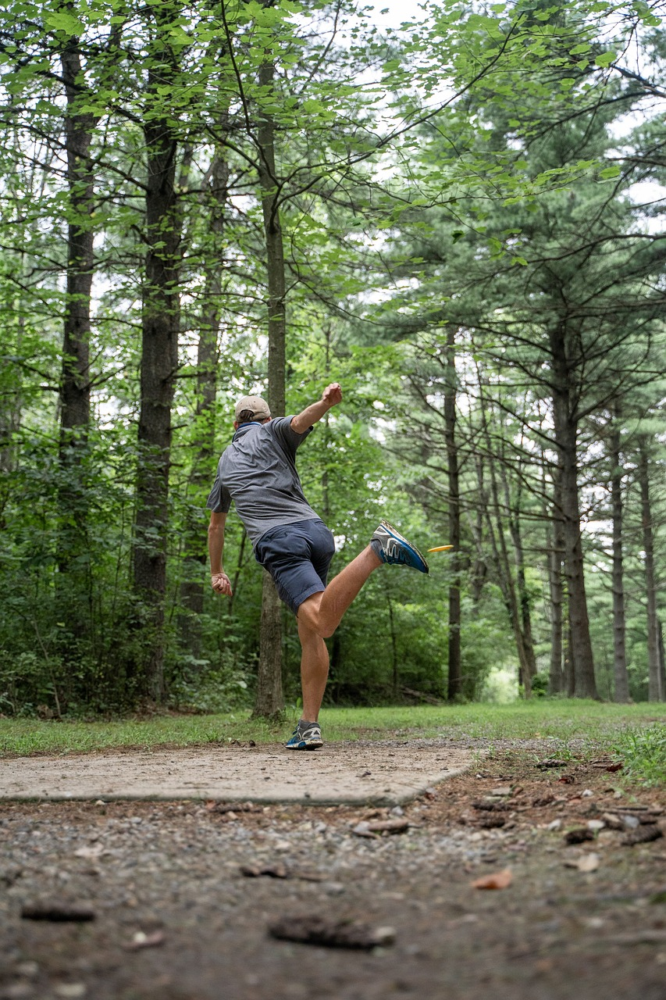

Disc Golf Techniques
Correctly Throwing a Disc
The foundation of a good disc golf game lies in mastering the throw. Here are some key aspects to consider:
Grip:
Power Grip: Hold the disc firmly with all four fingers under the rim and the thumb on top. This grip provides maximum control and power, especially for long-distance throws.
Fan Grip: Spread your fingers out underneath the disc, which offers more control and is ideal for approach shots and putts.
Stance and Footwork:
The X-Step: This footwork technique is crucial for generating power in your throw. It involves crossing your lead foot behind the other foot before you step forward to throw, helping to build momentum.
Balanced Stance: Keep your weight centered and balanced. Shift your weight from the back foot to the front foot as you throw.
Throw Mechanics:
Backhand Throw: This is the most common throw. Keep your arm straight and pull the disc across your chest, releasing it with a snap of the wrist. Ensure your follow-through is smooth and your body finishes facing your target.
Forehand (Flick) Throw: Hold the disc with two fingers under the rim and your thumb on top. Snap your wrist as you release the disc. This throw is useful for navigating tight curves and obstacles.
Focus on Smooth Release:
Avoid strong-arming the disc. Instead, focus on a smooth, fluid motion. The power should come from the rotation of your body and the snap of your wrist.
Correctly Playing the Tee

The tee shot sets the tone for each hole, making it a critical aspect of disc golf. Here are some tips to improve your performance off the tee:
Preparation:
Course Familiarity: Take time to understand the layout of the hole. Identify potential hazards, obstacles, and the best landing zones.
Disc Selection: Choose a disc that suits the distance and flight path required. Use a driver for long shots, a mid-range disc for moderate distances, and a putter for accuracy.
Mental Focus:
Visualize the Shot: Before stepping up to the tee, visualize the flight path of your disc. This mental rehearsal can improve your focus and execution.
Calm and Composed: Maintain a calm demeanor. Deep breaths and a relaxed stance can help reduce anxiety and improve performance.
Technique:
Consistent Routine: Develop a pre-shot routine that includes practice swings and visualization. Consistency in your routine can build confidence and improve accuracy.
Controlled Power: Focus on a controlled, accurate throw rather than sheer power. Accuracy off the tee can save you strokes over the course of a round.
Tips from Professionals

Learning from professional disc golfers can provide valuable insights. Here are some techniques used by top players:
Adaptability:
Versatile Throws: Professionals are adept at various throwing techniques (backhand, forehand, roller) and can adapt to different situations on the course.
Shot Shaping: Pros can manipulate the flight path of their disc to navigate complex courses. This involves using hyzer (disc tilting towards the ground) and anhyzer (disc tilting away from the ground) angles to shape shots around obstacles.
Practice Regimen:
Field Work: Professionals spend hours practicing different throws and refining their technique. Setting aside time for focused practice can lead to significant improvements.
Putting Practice: Putting is crucial in disc golf. Pros dedicate substantial time to putting practice, focusing on consistency and accuracy from various distances.
Course Management:
Strategic Play: Professionals play smart by minimizing risks. They often opt for safer shots that ensure a good position for the next throw rather than risky, aggressive shots.
Wind Reading: Understanding and adjusting for wind conditions is a vital skill. Pros know how to adjust their throws to compensate for wind, ensuring more predictable outcomes.
Incorporating these techniques into your disc golf game can elevate your performance. Focus on mastering the basics, refining your technique, and learning from the pros to become a more skilled and strategic player.